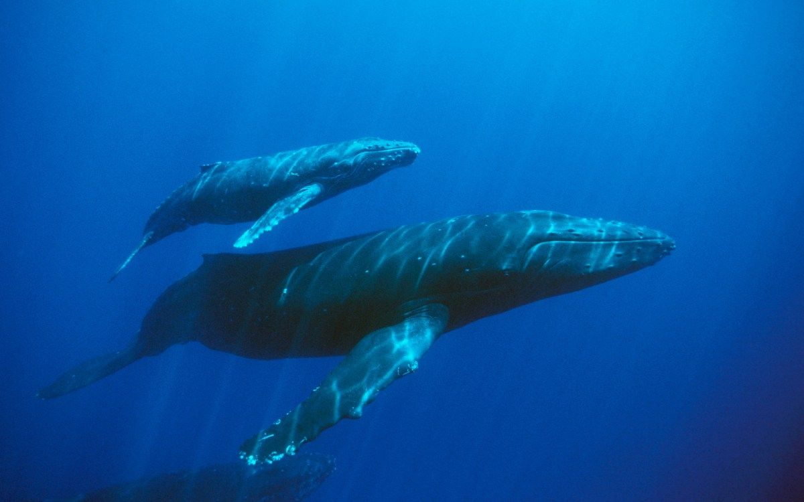

Elk dier heeft andere dieren waar hij mee kan samen leven en heeft dieren waarvoor het moet vluchten. Het ene dier leeft gezellig samen met soortgenoten en andere leven liever alleen. Hoe zit dat bij de vinvis? Moet hij voor bepaalde dieren bang zijn en wegzwemmen? En is een blauwe vinvis een dier dat graag in groepen leeft zoals wolven of leven ze liever meer in hun eentje zoals ijsberen?
Vijanden
 Stel je bent een antilope. Je moet dan altijd op je hoede zijn, want er kan altijd een leeuw opeens op je aan het jagen zijn. Je moet altijd klaarstaan om weg te kunnen rennen. De blauwe vinvis is het grootste dier op aarde. Voor wie moet hij dan wegzwemmen? Eigenlijk voor niemand. Hij heeft geen vijanden. Het enige waar hij bang voor hoeft te zijn, zijn orka's. Het gebeurt namelijk wel eens dat een groep orka's een blauwe vinvis aanvalt, maar vaak is de blauwe vinvis snel genoeg om weg te zwemmen. Vroeger moesten de blauwe vinvissen ook bang zijn voor mensen, maar nu is het jagen op blauwe vinvissen verboden. Meer daarover bij bedreiging.
Stel je bent een antilope. Je moet dan altijd op je hoede zijn, want er kan altijd een leeuw opeens op je aan het jagen zijn. Je moet altijd klaarstaan om weg te kunnen rennen. De blauwe vinvis is het grootste dier op aarde. Voor wie moet hij dan wegzwemmen? Eigenlijk voor niemand. Hij heeft geen vijanden. Het enige waar hij bang voor hoeft te zijn, zijn orka's. Het gebeurt namelijk wel eens dat een groep orka's een blauwe vinvis aanvalt, maar vaak is de blauwe vinvis snel genoeg om weg te zwemmen. Vroeger moesten de blauwe vinvissen ook bang zijn voor mensen, maar nu is het jagen op blauwe vinvissen verboden. Meer daarover bij bedreiging.
Andere organismen
Bij veel grote dieren zitten er kleine oragnismen op hun huid. Ook bij de blauwe vinvis. Zo zitten er bijvoorbeeld kleine eencellige organismen en kreeftachtige zoals zeepokken en walvisluizen op de huid van de blauwe vinvis. Veel van die organismen zitten er alleen maar en reizen gewoon mee de wereld rond op de huid van de blauwe vinvis. Andere kunnen ook echt schade aanrichten op de huid. Walvisluizen kunnen veel schade aanrichten, maar van alle soorten walvisluizen komt er maar eentje voor op de huid van de blauwe vinvis. Dus zitten er weinig en heeft hij er geen last van. Oftewel de blauwe vinvis heeft wel organismen op zijn huid maar die kunnen niet zoveel schade aanrichten.
Relaties onderling
 De blauwe vinvis komt in verschillende aantallen voor. Je ziet ze alleen, in paren of in een groepje. Als je ze in paren ziet is het vaak een moeder met een kalf. In foerageergebieden komen vooral groepen voor. Ze zijn dan samen naar eten aan het zoeken. Als de dieren in de winter naar de warmere zeeën gaan vindt ook de voortplanting plaats. Meerdere mannetjes gaan dan om een vrouwtje heen zwemmen. Het laatste mannetje dat overblijft wint. Zijn sperma spoelt namelijk het sperma van de andere mannetjes weg, daarom zorgt de laatste mannelijke vinvis voor de bevruchting. Het duurt ongeveer 11 maanden tot 1 jaar voordat het kalf geboren wordt. De kalveren worden dus in de tropische zeeen geboren, in de winter. De zoogtijd van het kalf bij de moeder is kort vergeleken bij andere dieren, namelijk zeven maanden. De moeder verliest in die tijd ongeveer 25 ton van haar lichaamsgewicht. Het kalf drinkt ongeveer 370 liter melk per dag. De moeder verzorgt en beschermt het kalf in haar eentje, zoals hier op de foto te zien is. De vader houdt zich er niet mee bezig.
Ga terug